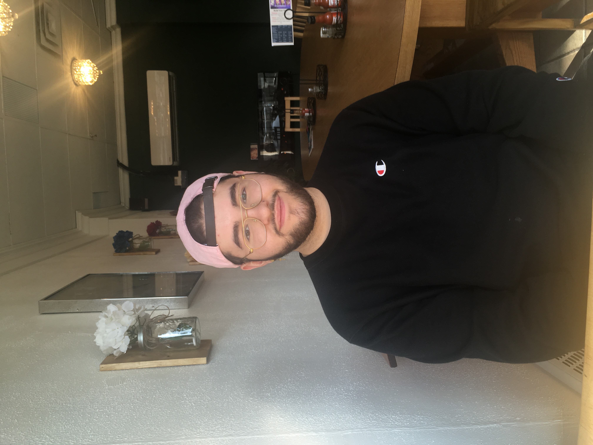

About Me
Hello! I am 22 years old and am in my last year of my Computing Science degree. I am a huge foodie so in my spare time I like to cook a lot and I am always on the lookout for new/exotic food places to try. I also am a huge gamer, and I have been playing Super Smash Bros. Melee competitively for almost seven years now!Resume
HabitUp Github repo
Gobber's Hoard hosted site
What do I bring to the table?
Before starting my degree, I did not know a single thing regarding computing science or programming, but over the past four years I have learned so much valuable information. I am now fluent in multiple computing languages, database languages, and unit testing. I also have six years of customer service experience and 4 years of retail sales experience over four different work environments. I have also been the club president for the Smash @ UofA club for three years now where I have obtained organizational skills through event, resource, and financial management.